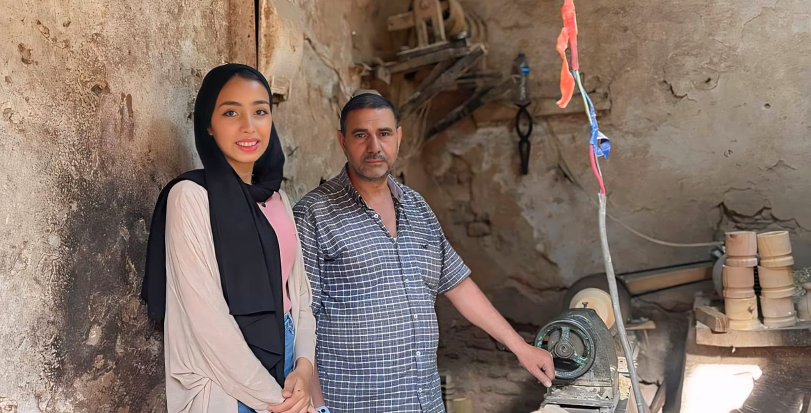
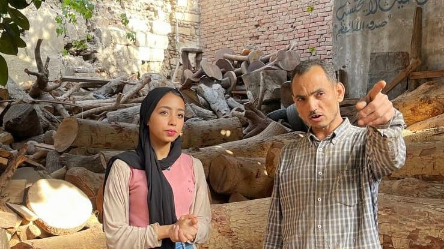

كفاح وتطور نابع من مئات السنين "مهنة خراطين الخشب"
- تحتل الحرف اليدوية والصناعات التقليدية مساحة أصيلة من التراث المصري، حيث تتنوع هذه الحرف منذ القدم معتمدة على الخامات البيئية، والتي معها برع العامل لإخراج إبداعه وحَذَقَ الفنان لإبراز موهبته. ودأبت مصر خلال السنوات الماضية على الاهتمام بالصناعات اليدوية، ووضع برامج لتطويرها وحمايتها من الاندثار، عبر المبادرات الحكومية والأهلية والفردية، وذلك للاستفادة منها في المجال الاقتصادي عبر زيادة الناتج المحلي الإجمالي وخفض معدلات البطالة، وفي المجال الثقافي عبر التأكيد على الهوية المصرية وعراقة التراث المصري ومن أهمها حرفة خراطة الأخشاب
- ويعد الحاج محمد يونس صاحب أقدم ورشة خراطة الأخشاب في مصر الذي يزيد عمرها عن 120 عام، واحدا من أهم فناني خراطة الخشب بمنطقة تحت الرابعه ببوابة المتولي، فهو ورثها عن والده وأجداده. الورشة تعمل بتقطيع الخشب بالشجر مثل خشب الصمت والسرسوع واللبخ والكية والفيكس. تصلح لعمل كل شيء على حسب الطلب اللي هو يعمله، مثل الأطباق الخشب والسلاطين، والكاسات، وعمل كبايات من الخشب
- وذكر أن رغم أن هذه الحرفة قديمة إلا إنها تحيا حتى الأن بسبب حبنا لهذه المهنة وبسبب هذا الحب وتطورنا المستمر لي نفسنا مع الشغل، يتوافد الكثير من السياح يبدون أعجبهم الشديد بهذا الفن ويشترون سلاطين صغيرة كده وأطباق كبيرة ومنهم العرب يشترون العديد ويطلبونها مخصوص بكميات كبيرة وانا هذه الورشة كانت تعمل مع الاتحاد الأوروبي من فترة وتم تكريمهم بشهادة عالمية بذلك والعمل مع العديد من المهندسين المصريين والأجنب.

- وتخرط الأخشاب بطريقة فنية من طبقة الطق من شجر شمس كما هي بالأرياف "ومن هنا يدخل على المنشار بتقطع المقاسات إلى على حسب الحاجة فمثلا طبق 30 سم، قطع حتة الخشب 30 سم. بعد كده تذهب وتقيس على المقاس على المنشور، وبعد هذا تأتي وظيفة مخرج المخرطة هو الذي يشكل قطعة الخشب على حسب الحاجة أكواب مثلا أو صينية أو طقم شمسيه الذي يتجمع فيه الشمسية كلها، القاهرة الشمسية، الخشب الكبيرة. فيه. بتجمع فيها خشب الشمسية، الطبق ده بعد كده بتشكل فيه حاجة بيتضهر، أول حاجة اسمها تضهير، بعد كده تفضيل بعد كده يدخل مرحلة بيأخذ مادة عازلة وسنفرة ومن ثم آخر حاجة فيه السنفرة
- وأضاف المعلم عربي تاجر أخشاب الأشجار بمنطقة رملة بولاق الذي ورس المهنة من والده، يعني أنا وأساس عمله في التقطيع خشب الشجر، تقطيع خشب الشجر والفحم، عملت الورشة من سنة 1950 ووالدي طبعا كان تاجر لم يكن موجود المنشار كهربائي و"كان شغلي كله طبعا يدوي وبدائيات إلي هو البلط واللواب وكد والتقطيع الخشب، وبعد كده بقى هو بقى لما توفى أنا بقى استمريت فيها يعني وطورت منها شوية من نفسي طبعا في المنشار ومبخرطة وما لم يتدخل شغل في الخشب والتصنيع والشغل الديكورات وكده. بس بفضل الله يعني إحنا عندنا المجال خشب، الشجر ده كبير جدا، وفيه أنواع كثيرة جدا، وفيه تصنيع، وفيه منه حاجات كثيرة جدا. بنشتغل بخشب يعني بتاع بلدنا إللي هو بتاع مصر في عندنا منه نوعين، في حاجة اسمها بلدي، في حاجة اسمها فواكه البلدي، كل ما هو مثمر. البلدي، قصدي كل ما هو زينة بيضلل ما بينتجش ثمرة، والفواكه إللي هو بكل ما هو مثمر، طبعا، طبعا البلدي بقى عندنا منه أنواع كتيرة جدا، بقى عندنا الكافور وبلدي، وكافور بريحة، وعندنا جزورينا، الجزورين دي في منها، بلدي أحمر وأبيض وسوداني، وعندنا.
- وكان المعلم محمود حراز أحد اهم التجار بورشة عربي الذين يستوردون الأخشاب بمختلف الأنواع من خارج مصر بدول أوروبا والبرازيل مؤكدً إنه يتمنى استيراد الدولة لأخشاب من الخارج وفتح سوق الاستيراد في هذا المجال ويكون قليل الجمارك للتجار في هذا المجال جماركه من "استراليا وهم عندهم كمية غابات رهيبة وخشب رهيب. بعد لو يستورد مثلا من استراليا من بنغلادش، من الهندي البامبو ده بيجي من الهند، ولسة مزروع في مصر جديد، شتلاقي مزرعة جديدة جدا"
- وذكرة ورشة محمد هاشم بمنطقة السبتية عن أكثر أنواع الأخشاب استخدام في هذا المجال من تصنيع الأثاث وما أخره

- يعد خشب البلوط أحد أكثر أنواع الأخشاب استخداماً في تصنيع أثاث المنزل على مدار عشرات أو مئات السنين، ولا سيما مع توافر هذا الخشب بكميات كبيرة بجانب مميزاته الكثيرة مثل المتانة والصلابة وسهولة التصنيع والتشكيل، ومن أهم مميزات هذا الخشب هو وجود حبيبات فيه تعطيه المنظر الجميل والجذاب عند استخدامه للقشرة الخارجية للأثاث. ويستخدم خشب البلوط بشكل كبير في صناعة الأثاث المنزلي بمختلف أشكاله، ويوجد نوعان من هذا الخشب وهما: • الخشب الأبيض: يتميز بلونه الجذاب وقدرته على مقاومة الرطوبة، ويكثر استخدامه في صناعة الأثاث الخارجي وفي صناعة الأرضيات داخل الشقق، وغيرها من الاستخدامات. • الخشب الأحمر: هذا النوع يعد أقل استخداماً مقارنةً بالخشب الأبيض، ولذا نادراً ما نجده مستخدم في الصناعات من حولنا.
- يعتبر خشب الموسكي من أرخص أنواع الخشب ويرجع السبب وراء ذلك إلى وجود عقد داخل ألواح هذا النوع، وهذه العقد يوجد منها نوعين وهما، عقد خبيثة وعقد حميدة، ويمكنك أن تميز هذه العقد بمجرد النظر، حيث تكون العقد الخبيثة ذات لون أسود داكن كما يوجد فاصل بينها وبين الخشب، ومشكلتها الأساسية أنها يمكن ان تسقط مع مرور الوقت، ولكن في المقابل تعد العقد الحميدة غير سيئة فهي تكون ذات لون فاتح وقريب جداً من لون الخشب، كما أنها تضفي لمسة جمالية لألواح الخشب من هذا النوع.
- وتعد مشكلة العقد هذه هي السبب الرئيسي وراء أسعار هذا النوع المنخفضة، والذي يستخدم بشكل كبير في صناعة الأبواب وألواح الأسرة وأيضاً غالباً ما يستخدم في غرف الساونا وغرف المعيشة، ويعد من أكثر أنواع الخشب الطبيعي إنتشاراً واستخداماً في الكثير من التطبيقات.
- أهم ما يميز خشب الأرو هو المتانة والقوة والصلابة ولعل هذا ما يجعل هذا النوع من الخشب يصعب تشكيلة وزخرفته، وعلى الرغم من ذلك فإنه يستخدم بشكل كبير في صناعة الأثاث ولا سيما القطع التي تكون عرضةً للضغط والصدمات، ويعد خشب الأرو من أغلى أنواع الخشب ولذا فإن إستخداماته تكون محدودة نوعاً ما، مثل تزيين الحوائط ولا سيما أنه يضفي لمسة من الجمال والأناقة على الحوائط.
- أنواع خشب الأرو • خشب الأرو الأمريكي. • خشب الأرو الإنجليزي. • خشب الأرو الأفريقي. • خشب الأرو اليوغسلافي. • خشب الأرو النمساوي
- يعد خشب شجرة الجوز من الأخشاب باهظة الثمن نظراً لندرتها وقوتها، ومن أهم ما يميز هذا النوع من الخشب هو لونه المميز والقريب من لون الشيكولاته مع وجود العديد من الألوان الأخرى التي تتدرج من البني الداكن وحتى اللون الأورجواني، ولذا غالباً ما يستخدم هذا النوع من الأخشاب في القشرة الخارجية للأثاث الراقي والمميز.
- ويستخدم هذا النوع في صناعة الأثاث الفاخر وذلك يعود لثمنه الباهظ، حيث يعتبر هذا النوع من الخشب من أغلى الأنواع، كما يتميز بالعديد من المزايا مثل مقاومة الحرارة المرتفعة، وأيضاً صلابة وكثافة الألواح من هذا النوع، كما أنه يتميز بمقاومة المياه وغيرها من العوامل المختلفة، ومن أكثر ما يميز خشب الماهوجني هو لونه البني الداكن الذي يميل للأحمر، ويدخل في صناعة الأبواب المنزلية وغيرها من التصميمات والديكورات المنزلية. أنواع الخشب الماهوجني • خشب الماهوجني الأفريقي. • خشب الماهوجني الكوبي. • خشب الماهوجني الهندوراسي. • خشب الماهوجني الهندي.
- تعد الميزة الأساسية لهذا النوع من الأخشاب هو مقاومة الماء والعفن والروائح الكريهة، بالإضافة إلى أن هذا النوع مقاوم للبكتيريا وسهل التنظيف ما يجعله النوع المناسب من أنواع الخشب الطبيعي للاستخدام في المستشفيات والأماكن العامة والمطابخ، كما يتميز خشب الأكاسيا بألوانه البنية المميزة والتي تعطي الإحساس بالدفء والأمان والتي تجعله خيار مميز للإستخدام في الأثاث المنزلي وهو من أفضل أنواع الخشب لغرف النوم.
- واحد من أنواع الاخشاب الطبيعية المميزة جداً وهو الخشب الأحمر وقد سمي بهذا الإسم نظراً للونه الأحمر الجميل، وبجانب لونه المميز فهو لديه العديد من المزايا الأخرى مثل مقومة التعفن ومقاومة الحشرات، ولذا يستخدمه الكثيرون في صناعة أجزاء كثيرة من الأثاث في المنزل مثل طاولات الطعام والأبواب، كما يتميز بسهولة تشكيلة وزخرفته يدوياً.

- يعد خشب أشجار الصنوبر من أشهر أنواع الاخشاب الطبيعية نظراً لوفرته بكثرة وفي جميع البيئات، فهو معروف بأنه من الأخشاب اللينة والطرية التي يسهل العمل بها وتشكيلها، وقد استخدمه الإنسان منذ القدم في الكثير من شؤون حياته ولا سيما في أعمال البناء، ويتدرج خشب الصنوبر في ألوانه من اللون الكريمي وحتى اللون البني المصفر، ولكن هناك عيب وحيد في هذا النوع وهو أنه غير متين مقارنةً بالأنواع الأخرى من الأخشاب.
- النوع الأخير معنا في أنواع الخشب الطبيعي هو خشب الكرز والذي يعد أقوى أنواع الخشب بدون منازع، حيث يتميز بمتانته، كما أن حبيباته المتقاربة تزيد من نعومة ملمسه، هذا بجانب ألوانه المميزة والتي تتدرج من البني إلى الأورجواني، ولكن سعره مرتفع جداً ولذا تنحصر استخداماته في صناعة الأثاث على صناعة أجزاء معينة مثل طاولة السفرة وبعض أجزاء المطبخ وبعض الأمور الأخرى التي تحتاج لخشب قوي ومتين ويتحمل الصدمات.